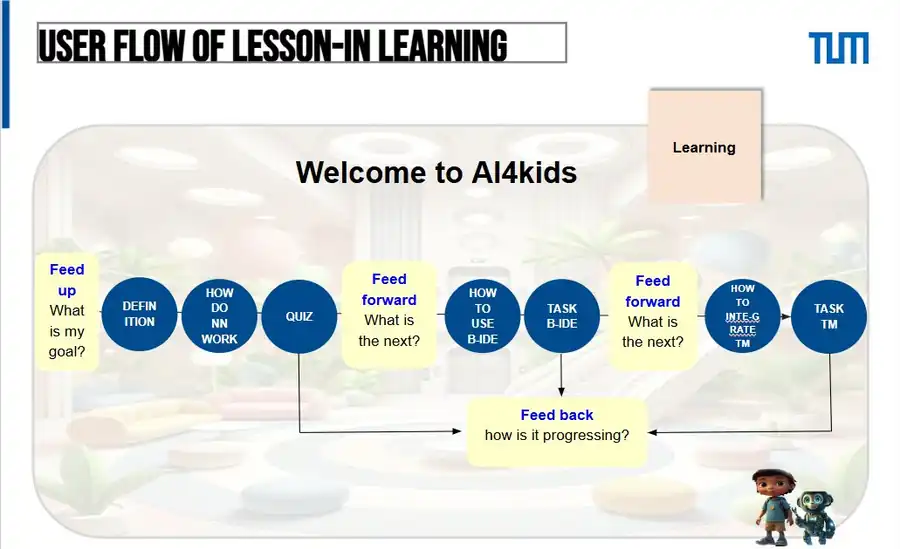
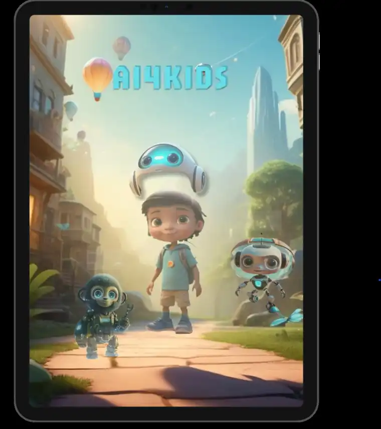
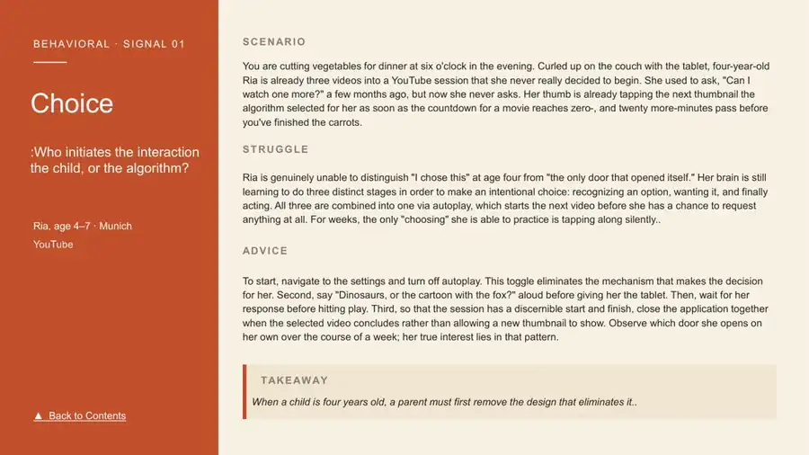
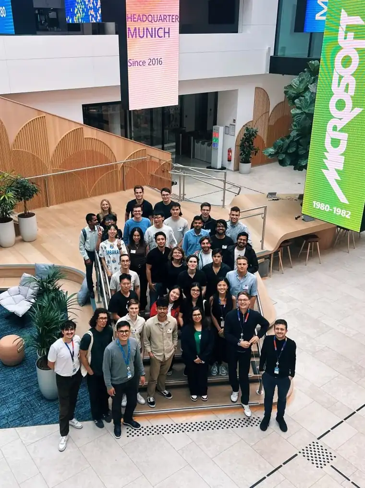
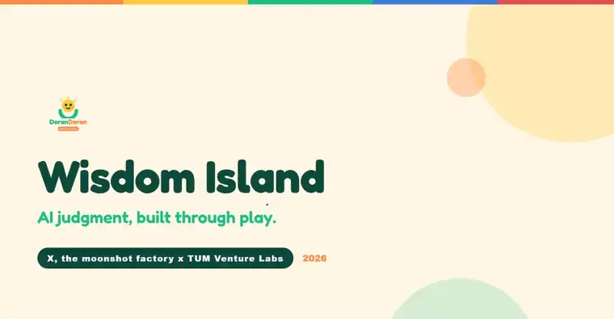
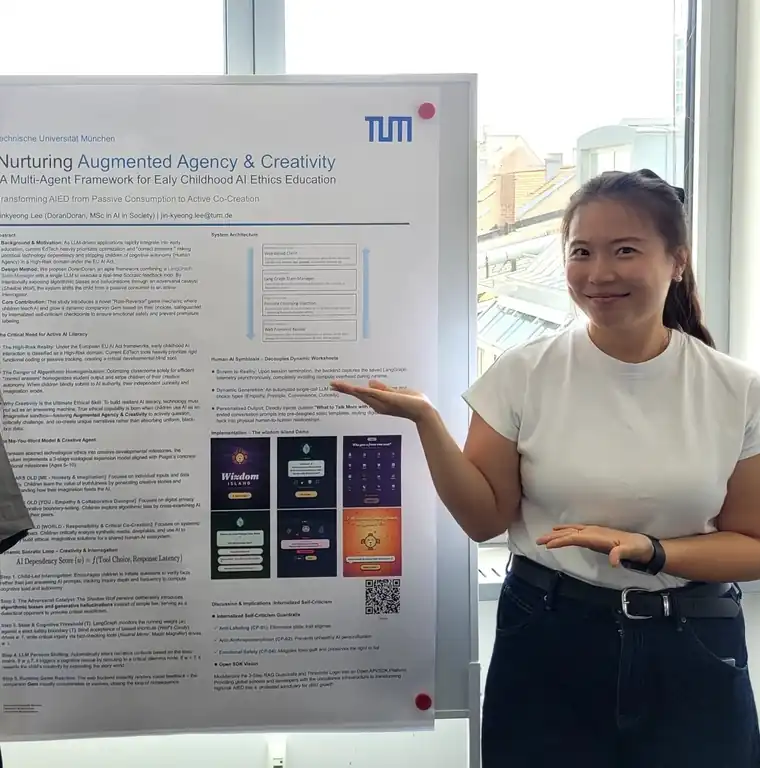
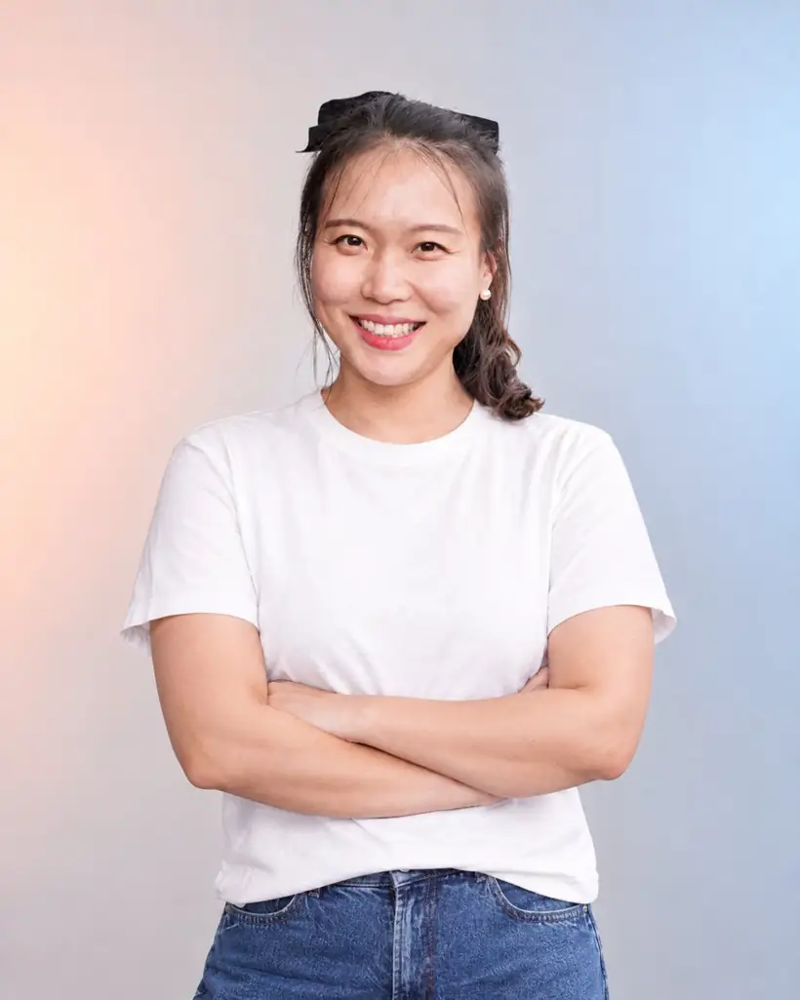
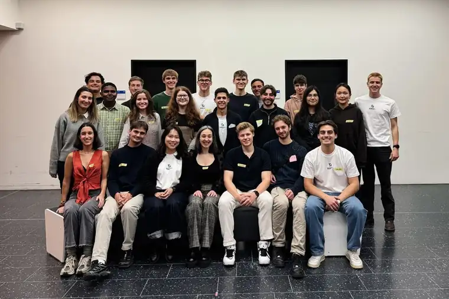

Build research-grounded AI products for kids & society.
I turn research on AI ethics and child development into products people can use, from problem framing to working prototype.
See the work →From research to working prototype.
MSc AI in Society at TUM, five years of supply chain and process automation before that. I design the learning, the flows and the guardrails, and build prototypes that make them real.
How I work
The same five steps in every project below- 01
Ground
Start from evidence: developmental psychology, learning science and the rules that apply, from the EU AI Act to GDPR.
e.g. Smart Kids, Safe AI - 02
Define
Frame the problem with the people who have it: parents, teachers, an NGO, a UN team.
e.g. InitiativGruppe - 03
Design
Design the learning flow, the product flow and the guardrails together, not one after the other.
e.g. AI4KIDs - 04
Prototype
Make it real enough to test: Figma, a web prototype, a working frontend.
e.g. Wisdom Island - 05
Put it in hands
Pilot with families, demo to partners, hand over, and decide what comes next.
e.g. Pilot · Demo Day
Selected work
Four projects, from problem to resultWisdom Island
AI4KIDs
InitiativGruppe Assistant
Smart Kids, Safe AI
01 · Wisdom Island case study
Problem
Children meet AI before they can question it. Popular apps for this age teach letters and numbers, but none teach a child to ask why a machine answered the way it did.
Process
- Designed the OSA framework: notice bias in Others, then in Self, then in AI.
- Mapped five ethics pillars across three age bands, starting with a first stage built for 5–6-year-olds: one gesture per action, short spoken lines, no reading required.
- No penalties and no labels: children reflect through Socratic dialogue with a companion character.
- Turned EU AI Act and COPPA requirements into design rules, from data collection to how the AI companion is allowed to speak.
Result
A web prototype played by about 30 families. Selected through TUM Venture Labs to pitch to X, The Moonshot Factory, as it explores moonshots in education (Sep 2026).
Why it matters
Within five years, most children will talk to AI before they can read. They will need to question it, not just use it. Wisdom Island teaches that habit from age five.
Key decisions
A five-year-old should never be told she is "biased". The companion reflects her choices back as questions instead.
"Often chose the bigger friend" instead of a bias label, so parents don't read a report as a verdict on their child.
The pilot asked parents only for country and child age, and families never see anyone else's results.
Visual feedback is instant; the companion's AI-generated line is skipped if it takes longer than half a second.
Replace the prototype's fixed rules with the adaptive dialogue engine, make compliance rules configurable per country, and let children explain their reasoning out loud instead of picking an option.
02 · AI4KIDs case study
Problem
When AI literacy was only starting to enter German education, there was little structured, age-appropriate material for 10–14-year-olds.
Process
- Built each lesson on a feed up → feed forward → feedback loop, so learners always know their goal, next step and progress.
- Moved from concepts to practice: what AI is, how neural networks work, a quiz, a block-coding task and a Teachable Machine task.
- Designed an AI literacy test to see where each learner stands.
Result
Presented the prototype and received a 1.0, the highest grade in the German system.
Key decisions
Online learners have no teacher beside them, so each lesson states the goal, the next step and how they're doing.
Every concept is followed by a hands-on task with a real tool: block coding, then training a model in Teachable Machine.
An AI literacy test shows where each learner starts, so the course can meet them there.


03 · InitiativGruppe Assistant case study
Problem
People with a migration background in Munich struggle to find German classes, registration rules and counselling on the NGO's website, often in a language they don't read well yet.
Process
- Defined requirements with the NGO: German- and mobile-first, multilingual answers, WordPress-ready, low running cost.
- Designed the flow from question to answer with hybrid search (keywords + RAG) over the NGO's public content, refreshed by regular crawling.
- Built the frontend.
Result
Demonstrated live at TUM Social AI Demo Day (April 2026) and handed over to InitiativGruppe.
Key decisions
Keywords plus RAG over the NGO's own pages, so answers about courses, registration and fees come from what the NGO actually published.
A small nonprofit can't run new infrastructure, so the assistant reuses its WordPress site and free tiers.
Regular crawling updates the knowledge base when the NGO changes its pages, without anyone maintaining it by hand.
Rollout is the partner's decision. The next step is the WordPress integration and tracking which questions the assistant can't answer yet.
04 · Smart Kids, Safe AI case study
Problem
A four-year-old talks to a voice assistant before she can read and taps into autoplay before she can choose for herself. Blocking AI or simply allowing it no longer works, and parents are left without a clear role.
Process
- Built on developmental psychology (Piaget's preoperational stage) and guardrail-centred design rather than prohibition.
- Grounded legal examples in the EU AI Act, DSA and GDPR, with German data on young children's media use.
- Wrote five scenarios with one Munich child, Ria, across YouTube and a smart speaker: scenario, struggle, advice, takeaway.
- Chose a guide over a paper because parents need something usable at home.
Result
An illustrated playbook where every scenario ends with one small action a parent can try that day, plus a 60-second explainer video.
Key decisions
Parents need something they can use the same evening, so every scenario ends with one small action.
I first covered a wider range, then narrowed it so every piece of advice fits one developmental stage.
Blocking AI teaches nothing. The playbook helps a child stay the one in charge instead.

More work
Research and evaluationWRPBench
A benchmark for how LLMs behave on women's rights and gender equality, developed with UN Women's Data and Research Team. Co-author; content design and peer review across four policy domains.
Beyond Compliance
Learning analytics on 32,593 online learners: top achievers showed 1.8× the agency of diligent followers, against 1.3× the compliance. K-means, ANOVA, chi-square.

Healthcare LLM Agent
An autonomous LLM agent for a healthcare use case, built in a team at Microsoft's Munich headquarters. My role: problem framing, solution planning and product design.
Toolkit
What I use in the work aboveTalks & writing

Wisdom Island: AI judgment, built through play
Selected through TUM Venture Labs to pitch DoranDoran to X, The Moonshot Factory, as it explores moonshots in education. An eight-minute pitch on why children need to learn to question AI before they can read.

Nurturing Augmented Agency & Creativity
A proposed multi-agent framework for AI ethics education in early childhood. Children move from passive consumers to active questioners: a Socratic loop, an adversarial character that introduces biases on purpose, and guardrails against labelling and anthropomorphism. Shown with the Wisdom Island demo.
Augmentation or dependency? Interactive AI and human agency
Critical analysis of Raees et al. (2024) for The Augmented Human seminar, with a structured search of 15 papers (2020–2025) in four themes.
LLMs for explainability: transparency for everyone?
Team analysis of Bilal et al. (2025): can LLMs turn technical explanations such as SHAP into ones non-experts understand, and how should their quality be judged?
The Place of Judgment
A multi-sited qualitative study of learner agency and algorithmic authority in AI educational environments.
A binding coalition for Big Tech accountability
A multi-stakeholder governance proposal modelled on the UN Global Dialogue on AI Governance, using Carroll's CSR framework.
About

Before AI, I spent five years in supply chain and process automation at LG Electronics and Webasto, turning regulations and messy operations into systems that run. I now bring that habit to AI: taking ethical and legal requirements and making them part of the product.
- MSc AI in Society, TUM2024 – 2027 (expected)
- CEO & Co-Founder, DoranDoran2026 – present
- Founding Member, TUM Social AI2025 – present
- EV Battery SCM Strategy Analyst, Webasto2022 – 2023
- Supply Chain Operations Analyst (RPA), LG Electronics2019 – 2022
- Product Strategy Analyst, MOBIS Parts Europe2018 – 2019
- MSc Management, Cranfield School of Management2016 – 2017
- Korean · English · German

A student initiative building AI solutions with nonprofit partners. I worked on the InitiativGruppe Assistant and WRPBench.